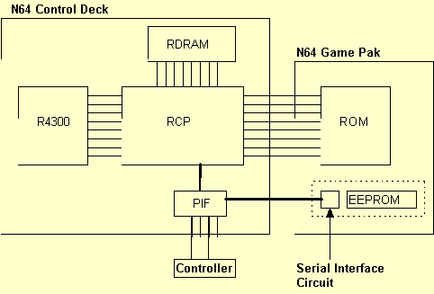

1.4
1.4
Nintendo 64 Developers Newsletters will be published periodically, as needed. These feature software and hardware system anomalies, which have been discovered, and their solutions and/or work-arounds. Development tips will also be included.
|  |
The command osEepromLongWrite uses the CPU timer to create the required 15 msec interval. The timer is set to interrupt after 15 msec, while the thread that called the function goes to the wait status.
This command checks for the presence of EEPROM. EEPROM is present if the returned value is 1 and absent if the returned value is 0. 0 will also be returned when a hardware error occurs (in the communication path).
s32 osEepromWrite(OSMesgQueue *mq, u8 address, u8 *buffer)
This command writes 8 bytes of data to the EEPROM address (0~63). If the write command has been properly sent to the interface circuit, a value of 0 is returned. If the address is not 0~63, a value of -1 is returned. If there is no EEPROM (due to trouble in the communication path) or the interface circuit has not responded (CONT_NO_RESPONSE_ERROR), a value of 8 is returned.
s32 osEepromRead(OSMesgQueue *mq, u8 address, u8 *buffer)
This command reads 8 bytes of data from the EEPROM address (0~63). If the data have been properly read (no error in the communication path), a value of 0 is returned. If the address is not 0~63, a value of -1 is returned. If there is no EEPROM (due to trouble in the communication path) or the interface circuit has not responded (CONT_NO_RESPONSE_ERROR), a value of 8 is returned.
s32 osEepromLongWrite(OSMesgQueue *mq, u8 address, u8 *buffer, int length)
This command writes 8 ( "length" bytes of successive data to the EEPROM address (0~63). Actually, it merely calls up osEepromWrite "length" times as a part of the function. There is a 15 msec wait using the CPU timer, however, for each write function. As with osEepromWrite, a value of 0 is returned if all write commands ("length" times worth) are sent to the interface circuit. If the address is not 0~63, a value of -1 is returned. If there is no EEPROM (due to trouble in the communication path) or the interface circuit has not responded (CONT_NO_RESPONSE_ERROR), a value of 8 is returned.
s32 osEepromLongRead(OSMesgQueue *mq, u8 address, u8 *buffer, int length)
This command reads 8 x "length" bytes of successive data to the EEPROM address (0~63). Actually, it merely calls up osEepromRead "length" times as a part of the function. The return values are the same as for sEepromRead, where a value of 0 is returned if all data ("length" times worth) have been properly read. If the address is not 0~63, a value of -1 is returned. If there is no EEPROM (due to trouble in the communication path) or the interface circuit has not responded (CONT_NO_RESPONSE_ERROR), a value of 8 is returned.
#include#define NUM_MESSAGE 1 OSMesgQueue siMesgQueue; /* Message queue for SI */ OSMesg siMesgBuf[NUM_MESSAGE]; /* Message buffer for SI */ OSMesg dummyMessage; /* Dummy message to put in queue */ static OSContStatus sdata[MAXCONTROLLERS]; /* Controller port status */ /* Write data to all 512 bytes of EEPRom. */ int save_eeprom(OSMesgQueue *mq, u8 *buffer) { int i, ret = 0; /* Confirm EEPROM communication */ if ( osEepromProbe(mq) != 1) return -1; for (i = 0; i < EEPROM_MAXBLOCKS ; i++) { /* Write data to EEPROM */ ret |= osEepromWrite(mq, i, buffer) ; /* Wait 15msec */ WAIT_15_M_SEC() ; } return ret; } /* Read all 512 bytes of EEPRom. */ int load_eeprom(OSMesgQueue *mq, u8 *buffer) { int i,ret = 0; /* Confirm EEPROM communication */ if ( osEepromProbe (mq) != 1 ) return -1; /* Read EEPROM data */ for(i = 0; i < EEPROM_MAXBLOCKS ; i++) ret |= osEepromRead(mq, i, buffer) ; return ret; } void main_proc (void) { /* Buffer for writing 512 bytes */ u8 save_buffer [EEPROM_MAXBLOCKS * EEPROM_BLOCK_SIZE] ; /* Buffer for reading 512 bytes */ u8 load_buffer [EEPROM_MAXBLOCKS * EEPROM_BLOCK_SIZE] ; /* Controller data */ static OSContPad rdata [MAXCONTROLLERS] ; int ret = 0; u8 p; /* Assign siMesgBuf as message queue's area. */ osCreateMesgQueue(&siMesgQueue, siMesgBuf, NUM_MESSAGE) ; /* Set to send dummyMessage to si message queue at interrupt */ osSetEventMesg(OS_EVENT_SI, &siMesgQueue, dummyMessage) ; /* Checks controller's connection status. */ osContInit(&siMesgQueue, &p, &sdata[0]) ; while(1) { /* Controller connected. */ if (p) { /* Activate trigger to read data. */ osContStartReadData(&siMesgQueue) ; /* Wait for message from si */ osRecvMesg(&siMesgQueue, NULL, OS_MESG_BLOCK) ; /* If No. 0 controller connected */ if(p & 0x1) { /* Copy data from controller to rdata */ osContGetReadData(&rdata[0]) ; /* A of No. 0 controller pressed */ if( rdata[0].button & CONT_A ) { /* Saves save_buffer data to EEPROM */ ret = save_eeprom(&siMesgQueue, save_buffer) ; if( ret ) ERROR_PROC_1 ( ) ; /* Error processing */ } /* B of No. 0 controller pressed */ if( rdata[0].button & CONT_B ) { /* Load EEPROM data to load_buffer */ ret = load_eeprom(&siMesgQueue, load_buffer) ; if( ret ) ERROR_PROC_2 ( ) ; /* Error processing */ } } /* if(p & 0x1) */ } /* if(p) */ } /* while(1) */ }